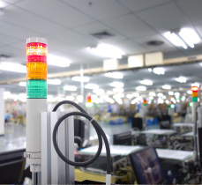

Machine To Intelligent
Wireless networking offers an open,
reliable infrastructure for
different factory systems and equipment to communicate.
Supporting high throughput, redundant connections, dual band
options and more, Advantech's machine to intelligent solutions
target factory production lines, packaging automation, and
warehouse logistics that require high throughput, secure and
reliable networking
different factory systems and equipment to communicate.
Supporting high throughput, redundant connections, dual band
options and more, Advantech's machine to intelligent solutions
target factory production lines, packaging automation, and
warehouse logistics that require high throughput, secure and
reliable networking
Applications:

Equipment & Facility Management
Advantech wireless equipment and facility management solutions support multiple network interfaces and industrial protocols, high data penetration, long-range and low power for optimized data transmission. Advantech solutions enhance physical network deployments and machine and edge data acquisition for smarter operations and smarter management decisions.
Applications

Material Management
Advantech wireless material management solutions
include RFID
tags and gateways that utilize the benefits of high accuracy and
low power consumption. RFID technology helps manage incoming
materials, production line inventory control, warehouse tracking
and order fulfillment. From beginning to end, material control is
fast, easy and reliable.
tags and gateways that utilize the benefits of high accuracy and
low power consumption. RFID technology helps manage incoming
materials, production line inventory control, warehouse tracking
and order fulfillment. From beginning to end, material control is
fast, easy and reliable.
Applications